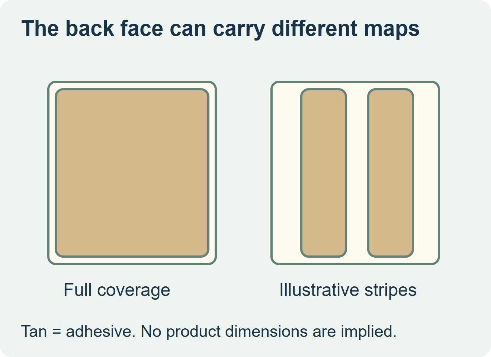
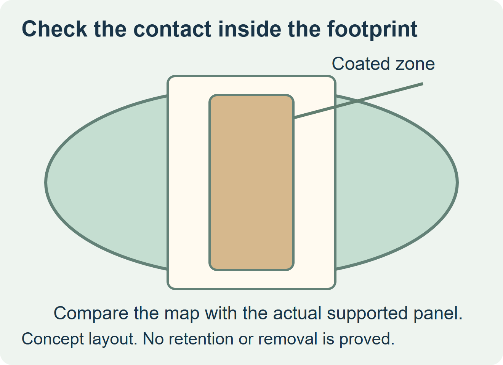

Buy the exact linerless media reference whose adhesive layout and performance match the intended food pack. Use a patterned proposal when its coated regions provide the required contact and its uncoated regions serve a defined handling or removal purpose. Compare a full-coverage proposal when the intended footprint needs adhesive throughout, subject to the printer and pack trial. More coverage is not automatically a better label.


Width does not describe the back face
Two white rolls of the same width can have different adhesive layouts. A specification should identify which regions are coated and how that layout relates to the separated output. Distinguish coverage from adhesive type: a repositionable description does not tell you where the adhesive is, and a patterned description does not establish clean removal.
BIXOLON’s certified linerless media catalogue lists center, side-edge, stripe, diamond and full-adhesive constructions against specific product and printer references. Separately, HERMA identifies full-surface adhesive coverage for Linerless Plus. These examples establish why coverage needs a name and drawing. They do not recommend either manufacturer’s media for an unspecified food-service printer.
| Job the output must do | Question for the media proposal | Pack observation |
|---|---|---|
| Stay on one flat landing through pickup | Which coated regions contact that actual panel? | Retained position and readability under the agreed handling. |
| Allow a defined hand removal or repositioning step | What adhesive and coverage represent that event? | Holding first, then the agreed removal and surface condition. |
| Print several output lengths | How does the map relate to every accepted separated piece? | Contact zones on both short and long representative outputs. |
| Bridge a fold or gap between panels | Which coated areas actually bond on each side? | Do not treat unsupported paper over the gap as bonded area. |


Overlay the map on the actual cut piece
Ask the supplier for a back-face map with the viewing side and feed direction identified. If the pattern has a repeat, ask how the supported separation relates to it. If it has continuous stripes, show their cross-web positions. Do not invent a repeat from a sample photograph or infer an uncoated handling margin from a blank printed border.
For a hypothetical bowl order label, a central adhesive zone may sit inside a flat lid panel while an uncoated end remains accessible. A different bowl may put part of that zone over a raised feature. Test the actual outputs and surfaces before keeping the same roll across both packs. The illustration is a layout question, not a recommendation to create a peel tab or a food seal.
Keep print support and package use as separate gates
Obtain confirmation for the exact media and installed printer/cutter configuration. A successful printout does not establish retention, and a good hand-applied piece does not qualify the roll’s full feed and separation route. Use the owner’s approved evaluation; do not alter a roll’s coating, cut adhesive with an unsupported cutter or change equipment settings from this diagram.
During the pack check, record application surface and temperature, intended holding time, normal carrying and the required removal event. Preserve a short and long output with the media reference and contact map. Compare price only after the required printed pieces and use sequence are common to both offers. Ask for project-specific supply confirmation rather than assuming a familiar width means a direct substitute.
Discuss the unresolved label requirement
Send printer configuration, current/proposed media reference and back-face map, short/long output samples, actual container and removal requirement, quantities. Review food label options and prepare a label specification inquiry. The contact page opens an email draft and lists email or WhatsApp for attachments. Supply, proof options, testing, pricing and timing require project confirmation.